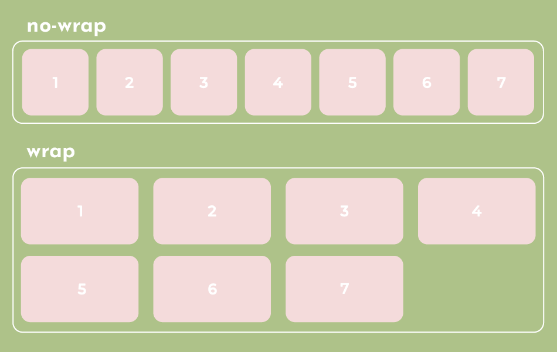
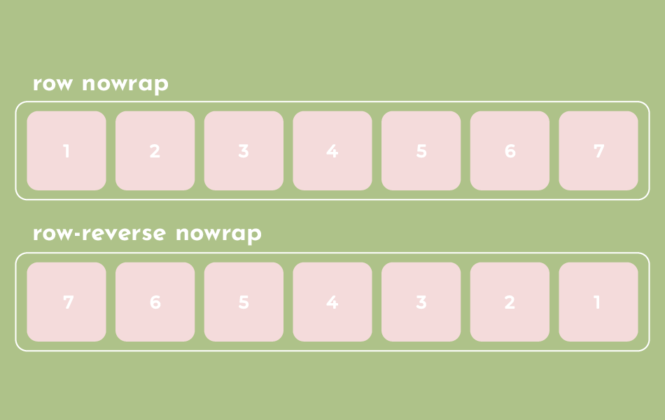
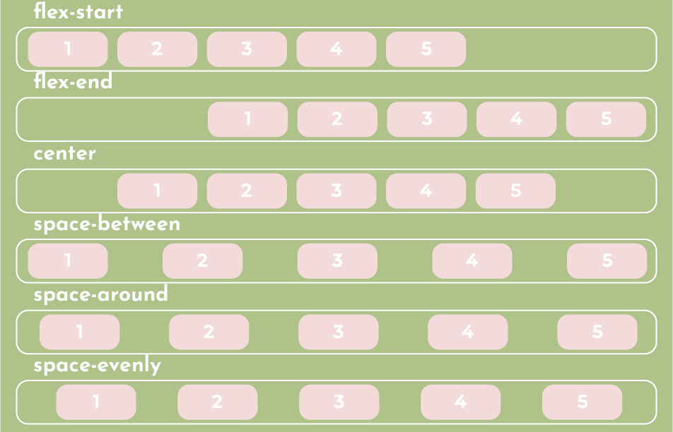
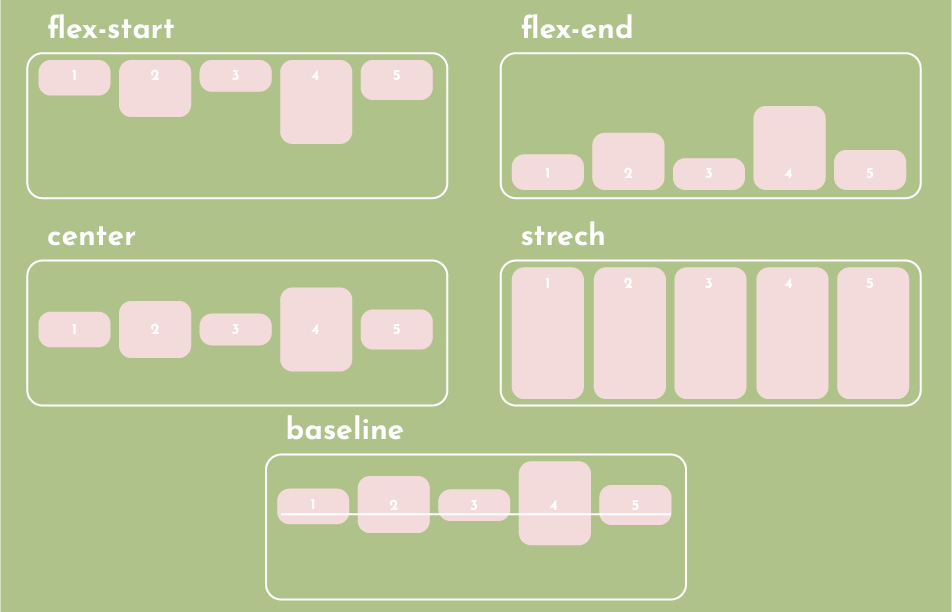
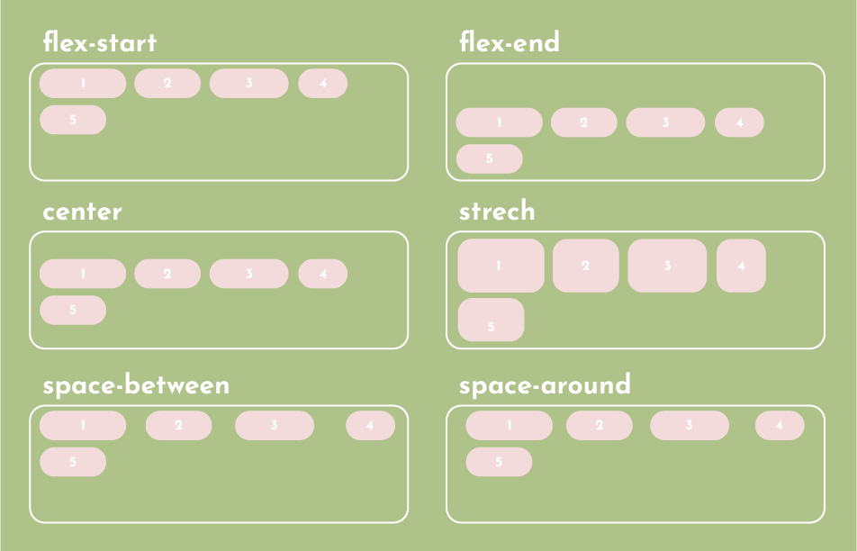
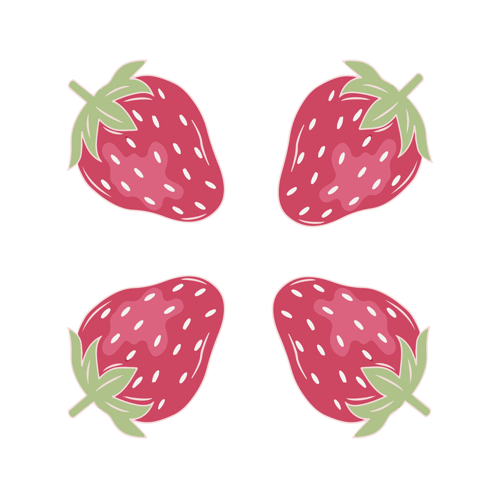

Flex-box
La idea principal detrás del diseño flexible es otorgar al contenedor la capacidad de modificar el
ancho, alto y el orden de sus elementos para llenar mejor el espacio disponible (principalmente para
adaptarse a todo tipo de dispositivos de visualización y tamaños de pantalla).
Un contenedor flexible expande los elementos para llenar el espacio libre disponible o los reduce
para evitar el desbordamiento.
Display: flex; Esto define un contenedor flexible; en línea o bloque en función del valor dado.
Propiedades para el padre
Por defecto, todos los elementos intentarán encajar en una línea. Permite que los elementos se ajusten según sea necesario.
- Nowrap: Todos los elementos flexibles estarán en una línea.
- Wrap: Los elementos flexibles se desplazan de arriba abajo en varias líneas.
- Wrap-reverse: Los elementos flexibles se desplazan de abajo hacia arriba.

Esta es una abreviatura de propiedades de flex-direction y flex-wrap, que juntas definen los ejes principal y transversal del contenedor flexible. El valor predeterminado es la row nowrap.

Esto define la alineación a lo largo del eje principal. Ayuda a distribuir el espacio libre adicional que sobra cuando todos los elementos flexibles de una línea son inflexibles o flexibles, pero han alcanzado su tamaño máximo. También ejerce cierto control sobre la alineación de los elementos cuando se desbordan en la línea.
- Flex-start: los ítems se alinean hacia la línea de inicio.
- Flex-end: Los ítems se alinean hacia la línea final.
- Center: Los ítems están centrados a lo largo de la línea.
- Space-between: los elementos se distribuyen uniformemente en la línea; el primer elemento está en la línea de inicio, el último elemento en la línea del final.
- Space-around: los elementos se distribuyen uniformemente en la línea con el mismo espacio a su alrededor.
- Space-evenly: los elementos se distribuyen de modo que el espacio entre dos elementos (y el espacio en los bordes) sea igual.

Esto define el comportamiento predeterminado de como los elementos flexibles se distribuyen a lo largo del eje transversal en la línea actual.
- Stretch: estirar para llenar el contenedor.
- Flex-start: los elementos se colocan en la línea de inicio.
- Flex-end: los elementos se colocan en la línea de abajo.
- Center: los elementos se centran en el eje transversal.
- Baseline: los elementos están alineados, como la alineación de sus líneas base.

Esta propiedad alinea los renglones de un contenedor flexible cuando hay espacio extra en el eje transversal.
- Flex-start: alineado al inicio del contenedor.
- Flex-end: alineado hacia el final del contenedor.
- Center: en el centro del contenedor.
- Stretch: estirar líneas para ocupar el espacio restante.
- Space-between: líneas uniformemente distribuidas; La primera línea esta al comienzo del contenedor mientras que la última esta al final.
- Space-around: líneas distribuidas uniformemente con el mismo espacio alrededor de cada línea.

La propiedad gap controla el espacio entre elementos flexibles. Se aplica ese espacio solo entre elementos que no están en los bordes exteriores.
Propiedades para los hijos
Por default, los elementos flexibles se presentan en el orden de origen. Sin embargo, la propiedad order controla el orden en el que aparecen en el contenedor flexible. Por default es 0.
Define la capacidad para que un ítem crezca si es necesario.
Acepta un valor entero que sirve como proporción.
Indica qué cantidad de espacio disponible dentro del contenedor flexible debe ocupar el
ítem. Los números negativos no son válidos.
En flex-grow: X;
El numero X indica cuantas unidades de crecimiento crecerá el ítem.
Para saber cuanto crecerá un elemento debemos calcular a cuanto corresponde una unidad de
crecimiento.
La formula para calcular el tamaño de una unidad de crecimiento es la siguiente:
Unidad de crecimiento = espacio disponible / suma de flex-grow.
Especifica la capacidad de un elemento para reducir en relación con el resto de
los elementos flexibles del contenedor. Por default en 0.
Especifica el comportamiento de los ítems cuando el tamaño del contenedor es menor al de los
ítems que lo componen.
El numero X indica cuantas unidades de reducción reducirá el ítem.
Para saber cuándo se reducirá un elemento debemos calcular a cuanto corresponde una unidad
de reducción.
La fórmula para calcular el tamaño de una unidad de reducción es la siguiente:
Unidad de reducción = espacio faltante / suma de los flex-shrink.
Esto define el tamaño predeterminado de un elemento antes de distribuir el espacio restante. Puede ser una longitud o una palabra clave.
- numero; Una unidad de longitud, o porcentaje, que especifica la longitud inicial de los elementos flexibles.
- auto; Valor predeterminado. La longitud es igual a la longitud del elemento flexible. Si el ítem no tiene una longitud especificada, la longitud
- initial; Establece esta propiedad a su valor predeterminado.
- inherit; Hereda esta propiedad de su elemento padre.
- Si se establece en 0 el espacio edicional alrededor del contenido no se toma en cuenta. Si se configura en auto, el espacio adicional se destruye segun su valor de felx-grow.
Es la abreviatura de flex-grow- flex-shrink y flex-basis combinadas. El segundo y tercer parámetro son opcionales. El valor predeterminado es 0 1 auto.
Esto permite que la alineación predeterminada se anule para los elementos flex específicos. Tenga en cuenta que las propiedades float, clear y vertical-align no tienen efecto en un elemento flexible.
- Flex-start: el borde del margen de inicio cruzado del elemento se coloca en la línea de inicio cruzado.
- Flex-end: el borde del borde transversal del elemento se coloca en la línea del extremo transversal.
- Center: el elemento esta centrado en el eje transversal.
- Baseline: los elementos están alineados, así como su línea de base esta alineada.
- Stretch: estirar para llenar el contenedor.
Imágenes responsive
La especificidad es el medio pro el cual los navegadores deciden que valores de propiedad css son los más relevantes para un elemento y, por lo tanto, se aplicaran. Cada selector tiene su lugar en la jerarquía de especificidad. Hay cuatro categorías que definen el nivel de especificidad de un selector:
Al 100% la imagen se podrá reducir, pero no se ampliará más del tamaño original.
Las imágenes de fondo también pueden responder al cambio de tamaño. Esto se puede hacer de tres formas diferentes.
- Estableciendo la propiedad backround-size en “contain” la imagen de fondo se escalará e intentará ajustarse al área de contenido. Sin embargo, la imagen mantendrá su relación de aspecto.
-
Backround-size: 100% 100%
La imagen de fondo se ampliará para cubrir toda el área de contenido. - Backround-size: cover: la imagen de fondo se escalará para cubrir toda el área de contenido.
Una imagen grande puede ser perfecta en una pantalla de computadora grande. Para reducir la carga o por cualquier otra razón, se pueden usar media queries para mostrar diferentes imágenes en diferentes dispositivos.
Se pueden configurar diferentes fuentes, y la primera fuente que se ajusta a las preferencias es la que se está utilizando.
SVG
SVG es un lenguaje de marcado para describir imágenes y aplicaciones de gráficos bidimensionales, y
un conjunto de interfaces de scripts de gráficos relacionados.
Es un formato de gráficos libre de derechos de uso generalizado desarrollado y mantenido por el W3C
SVG Working Group.
Los archivos SVG son gráficos vectoriales bidimensionales, tanto estáticos como animados en formato
XML. Se puede utilizar con imágenes como formas, trazados, texto y efectos de filtro.
Ventajas
Crear y editar cualquier editor de texto
Imprimir con alta calidad en cualquier resolución
Soporte del navegador

Las imágenes SVG son escalables
SVG es un estándar abierto
Los gráficos SVG NO pierden calidad si amplían o cambian de tamaño
Tipografía
El texto es parte imprescindible de la web. Productos, servicios, lo que haces, los que quiere
lograr con el proyecto web se muestran mediante el texto.
Junto con el color, la tipografía puede alterar por completo el significado que asociamos a un
proyecto. El texto puede decir una cosa; pero las letras, otra muy diferente.
Básicamente es la facilidad con que se puede leer y comprender un texto.
Estudios concluyen que es un error costoso si el texto es menor a 16px.
16px no es un tamaño grande, es el tamaño por defecto en muchos navegadores. 16px o 18px
deben ser las primeras medidas a probar.
Según John Kane en su Manual de tipografia, el ancho de línea optimo contiene entre 35 y
65 caracteres (7-12 palabras aproximadamente).
Aunque estas indicaciones fueron sugeridas para papel en un principio sirven también
para tener una legibilidad optima en pantalla.
Usar diferentes familias tipográficas te permitirá separar e identificar mejores
bloques de texto, establecer jerarquías claras, mejorar la legibilidad de los textos y, en
definitiva, hacer que el usuario se quede mas tiempo en la web.
Cada proyecto tiene sus propias necesidades, pero como casi siempre, menos, es más. No es
necesario utilizar mas de dos familias tipográficas, cuando hablamos de web, debemos
limitarnos a dos.
La recomendación es establecer el line-heigth al 120% (multiplicar por 1.2) el
tamaño del texto.
Si nos pasamos de interlineado será muy difícil crear continuidad, el lector tendrá que
hacer un esfuerzo extra para ir de una línea a la siguiente y podrá perderse.
No existe una regla general para la combinación de colores, eso va a depender
mucho del proyecto que se esté realizando.
El w3c sugiere que se use el contraste adecuado o los colores que hagan que se distinga el
texto del fondo. Es importante verificar el contraste antes de aplicarlo al diseño.
El uso de pixeles y ems es algo habitual. Mientras que los px son unidades absolutas, los ems son unidades relativas al elemento padre. Esto significa que cuando cambia el tamaño del navegador, es difícil calcular el tamaño para lograr el resultado deseado. Es mejor opción usar rems. Los rems, también conocidos como “root em”, son siempre iguales al tamaño de fuente del elemento HTML raíz, además todos los navegadores modernos lo admiten.
Reset
Los reset CSS son unas hojas de estilo en cascada que se suelen incluir en un documento HTML, para
minimizar las diferencias visuales que se dan al mostrar una misma pagina web, en diferentes
navegadores.
Esto porque cada navegador implementara su hoja de estilos propias e interna, con determinados
valores por defecto, que no siempre según la recomendación de la organización W3C.
El reset CSS eliminara gran parte del preformateo del navegador.
Hay varios Reset que se pueden utilizar:
- El reset de Tantek.
- El reset de Tripoli.
- El reset de Erik Mayer.
Normalize
Normalize es un archivo CSS cuyo objetivo es mantener los estilos similares en los navegadores,
porque cada navegador agrega sus propios estilos por defecto.
Normalize CSS regulariza estos estilos y hace que el proyecto se vea igual independientemente del
navegador donde se visualice. Además, está preparado para adaptarse completamente a HTML5.
A diferencia de algunos CSS reset “normalize” preserva los valores por defecto de los navegadores.
Además, también corrige errores e inconsistencias de los navegadores.
Mobile First
Estar conectado en internet se volvió parte de nuestro día a día. Poco a poco estamos dejando de
usar la computadora para realizar las tareas cotidianas y estamos usando cada vez más los
smartphones.
Si las personas pasan mas tiempo navegando en internet por medio del teléfono móvil; los mas sensato
seria crear primero un sitio web optimizado para los dispositivos móviles.
Pensando en esto Luke Wroblewski (director de productos de Google) en 2011, desarrollo el concepto
Mobile First, cuando publico el libro Mobile First.
Su propuesta era crear un sitio web pensado primero para dispositivos móviles y después ajustarlo
para la computadora.
Para aplicar este método, debemos tener en cuenta que todo lo que no sea esencial debe quedar fuera
del diseño.
Cuando la etapa de diseño para un dispositivo de tamaño reducido está lista, el siguiente paso es
estirar la ventana hasta que el diseño empiece a deformarse o a verse mal.
En este momento se deben definir la media queries para pantallas de mayor dimensión.